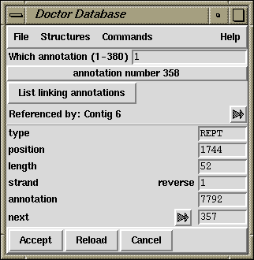

The gap4 database consists of records of several predefined types. The types correspond to the commands available within the Structures menu. All of these, except for the "Database" command, insert a dialogue between the menubar and whatever is underneath it. In the picture below we have selected "Annotations" from the menu which has prompted for "Which annotation (1-380)" (the 1-380 is the valid range of inputs available).

In the panel beneath the "Which annotation" question is a panel detailing another annotation structure. In general the structure type and number are shown at the top of the panel (in this case annotation number 100). Beneath this are the structure fields on the left followed by the values for these fields on the right. Sometimes gap4 may store a value as numeric, but display the structure as both a numeric and a string describing this value. For instance here the annotation strand is "1" which is gap4's way of storing "reverse".
Some values have an arrow next to them, such as with the "next" field in the illustration. Clicking on this arrow will display the structure referenced by this value. Here it is another annotation (annotation 357). It is stated that the annotation is part of Contig number 6. Clicking on the arrow next to this will reveal that contig structure.
Selected notes on editing the structures follows.
There is only a single Database structure. A description of its more important fields follows.
Some Reading Structure fields reference the record number in the gap4 database of a string. Where this string is short, such as the reading name, both the record number and the contents of the string can be edited. To edit a single name the string should be changed. To swap two reading names around either edit both strings or swap the two name record numbers.
The annotations value references an annotation number. If this is zero then this reading has no annotations.
The length is the complete length of sequence, including hidden data. The sequence_length is the length of only the used sequence. The location of the hidden data is specified by the start and end values. Note that sequence_length=end-start-1.
A left or right value of zero means that this reading has no left or right neighbour.
A Contig Structure is defined as a list of readings. The left and right values specify the first and last reading numbers in the doubly linked list representing the contig.
Annotations are stored as linked lists. Each reading and each contig has a (possibly blank) list. All other unused annotations are held on the free list. The next value is used to reference the next annotation number. A value of zero represents the end of the list.
The Template name field can be edited as both a string and the record number pointing to that string. The Template Structure display has links to a vector number and a clone.
The original clone name is often the name of the database. The use of original clones is primarily for large scale sequencing. When breaking down a sequence into cosmids and then into sequencing templates, we say that each cosmid is a clone.
A Note may be considered as a positonless annotation (without the position, length or strand fields). Notes store both their creation and last-modification dates. Notes may be attached, in a linked-list fashion, to readings, contigs, or the database structure.